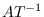

A plane object is represented by the normal vector on the plane
and the distance from the coordinates origin to the plane.
Two pairs of such normal vectors and distances are recorded in a plane object.
One represents the current status after transformations, while the other represents
the original normal and distance when the plane is defined.
plane [class]
:super propertied-object
:slots ((normal :type float-vector)
(distance :float)
-
- defines plane-equation. A plane is considered to have no boundaries
and extend infinitely.
:normal [method]
-
-
returns this polygon's normal vector which is always normalized.
:distance point [method]
-
-
computes distance between this plane and point.
:coplanar-point point [method]
-
-
returns T if point lies on this plane.
:coplanar-line line [method]
-
-
returns T if line lies on this plane.
:intersection point1 point2 [method]
-
-
computes the intersection point between this plane and the line
determined by two end points, point1 and point2,
and returns the parameter for the intersection on the line.
If the line and this plane are parallel, :parallel is returned.
:intersection-edge edge [method]
-
-
Returns the parameter of the intersection point for this plane
and a line represented by point1 and point2, or edge.
:foot point [method]
-
-
Returns a 3D vector which is the orthogonally projection of point
onto this plane.
:init normal point [method]
-
-
Defines a plane with the point on the plane and the normal vector.
Normalmust be a normalized vector, .
polygon [class]
:super plane
:slots (convexp edges vertices
(model-normal float-vector)
(model-distance :float))
-
- Polygon represents a loop on a plane.
Convexp is a boolean flag representing the convexity of the loop.
Edges is a list of edges forming the contour of this loop,
and vertices is a list of vertices.
:box &optional tolerance [method]
-
-
returns a bounding-box for this polygon.
:boxtest box2 &optional tolerance [method]
-
-
makes a bounding-box for this polygon,
and returns the intersection of the bounding-box and box2.
If there is no intersection, NIL is returned.
:edges [method]
-
-
returns the list of edges (circuit) of this polygon.
The list is ordered clockwise when the polygon is
viewed along the normal vector of this plane.
If you think of the normal vector as a screw, the edges are ordered
in the rotation direction for the screw to screw in.
When polygon or face is used for the surface representation of
a solid object, the normal vector is directed to its outside region.
When a polygon is viewed from the outside of the object,
edges are ordered counter-clockwise.
:edge n [method]
-
- returns the n-th element of edges.
:vertices [method]
-
-
returns the vertices of this polygon ordered in the same manner as edges.
Note that the first vertex is copied duplicatedly at the end of the list
and the list is always longer by one than the actual number of vertices.
This is for the ease of edge traversal by using the vertices list.
:vertex n [method]
-
- returns the n-th element of vertices.
:insidep point &optional (tolerance *epsilon*) [method]
-
-
returns :inside, :outside or :border
according to the location of point relative to this region.
:intersect-point-vector point vnorm [method]
-
-
Computes the intersection with the semi-line defined by the point and
the normalized direction vector, vnorm.
:intersect-line p1 p2 [method]
-
-
Computes intersection point with a line specified by p1 and p2.
The result is nil(no intersection) or list of the parameter and
the intersection position.
:intersect-edge edge [method]
-
-
Computes intersection point with a line specified by the edge.
The result is nil(no intersection) or list of the parameter and
intersection position.
:intersect-face aregion [method]
-
-
Returns T if this region intersects with aregion.
:transform-normal [method]
-
-
:reset-normal [method]
-
- recomputes the surface normal vector of this
polygon from the current vertices list.
:invert [method]
-
-
:area [method]
-
- returns the area of this polygon.
:init &key :vertices :edges :normal :distance [method]
-
-
face [class]
:super polygon
:slots (holes mbody primitive-face id)
-
- defines a face which may have holes.
Pbody and type represent the primitive body and the type
(:top, :bottom, :side) of the face in the body.
:all-edges [method]
-
-
:all-vertices [method]
-
-
Returns all the edges or vertices of the contour of this face
and all the inner loops (holes).
Note that :edges and :vertices methods
only return edges and vertices composing the contour.
:insidep point [method]
-
-
decides whether the point is inside of this face or not.
If the point is inside the outer contour of this face but also inside
the loop of any holes, it is classified as outside.
:area [method]
-
- returns the area of this face, that is
the area surrounded by external edges subtracted by the areas of holes.
:centroid &optional point [method]
-
- returns a list of the floating-point number and the float-vector
representing the center-of-gravity of this face.
If point is not given,
the first number represents the area of this polygon, and the
second float-vector the location of center-of-gravity of this polygon.
If point is given, it is taken as the top vertex of the cone
whose bottom face is formed by this polygon,
and the volume of this cone and its center-of-gravity are returned.
:invert [method]
-
- flips the direction of this face.
The normal vector is inverted, and the order of edge loop is reversed.
:enter-hole hole [method]
-
- adds a hole in this face.
:primitive-body [method]
-
-
returns the primitive-body which has defined this face.
:id [method]
-
-
returns one of (:bottom), (:top) and (:side seq-no.).
:face-id [method]
-
-
returns a list of the type of primitive-body and the face type.
For example, a side face of a cylinder returns
((:cylinder radius height segments) :side id).
:body-type [method]
-
-
returns primitive body which has defined this face.
:init &key :normal :distance :edges :vertices :holes [method]
-
-
hole [class]
:super polygon
:slots (myface)
-
- hole is a polygon representing an inner loop of a face.
A face may have a list of holes in its holes slot.
:face [method]
-
- returns a face that contains this hole.
:enter-face face [method]
-
-
makes a link to a face which surrounds this hole.
This method is only used in conjunction with the :enter-hole
method of the face class.
:init &key :normal :distance :edges :vertices :face [method]
-
-
2016-03-23